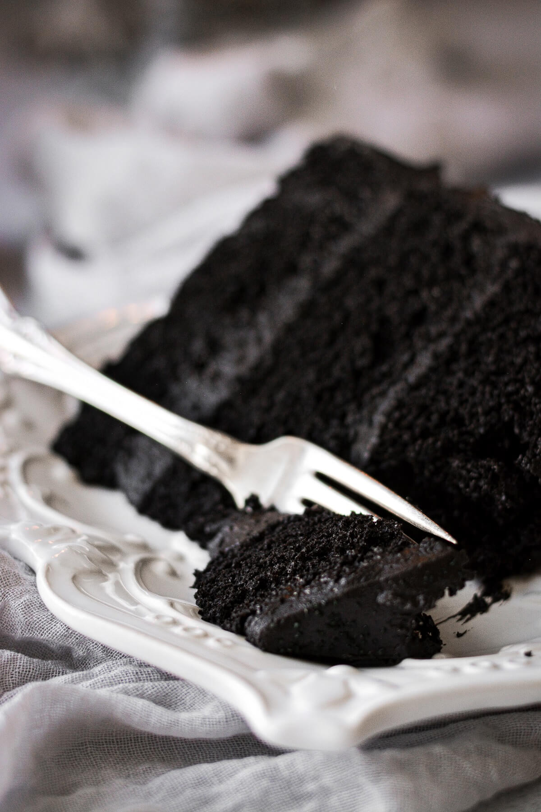
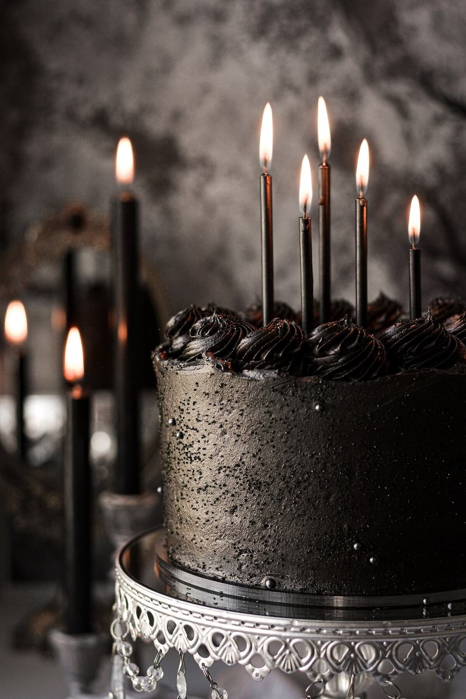

Black Velvet Chocolate Cake
Instructions
Cake:
- Preheat the oven to 350 F. Spray the bottoms of three 8-inch round cake pans with non-stick baking spray.
- In a large bowl, sift together the flour, sugar, cocoa powders, espresso powder, baking powder and salt.
- Separately, whisk together the eggs, milk, sour cream, oil and vanilla extract.
- Add the dry ingredients to the wet and whisk for 10-15 seconds until well combined. If the batter doesn't seem dark enough, whisk in the black gel food coloring.
- Divide the batter between the cake pans. Bake the cakes on the center oven rack for about 25-27 minutes, until the tops spring back when gently touched, or a toothpick or cake tester inserted in the center comes out clean.
- Set the pans on a cooling rack, cover loosely with a clean kitchen towel and cool completely.
Buttercream Frosting:
- In the bowl of your stand mixer fitted with the paddle attachment, beat the butter for 1 minute until smooth.
- Separately, combine the powdered sugar, cocoa powders, meringue powder and salt. With the mixer on low, add the dry ingredients by spoonfuls, mixing until mostly combined. Add the vanilla extract.
- Whip the buttercream on medium speed (#4/6 on a Kitchen Aid mixer) for 4-5 minutes, scraping the bowl several times, until very light and fluffy. Add the milk only if needed for desired consistency.
- Note: Black cocoa powder is more bitter than Dutch-processed cocoa powder. If the buttercream doesn't seem sweet enough to you, you can add 1/2-1 cup additional powdered sugar, but you'll need to add a small amount of milk, too, so the buttercream isn't too stiff.
Assembly:
- Place one of the cooled cakes on a cake board or cake pedestal. Frost the cake with a layer of buttercream. Repeat stacking and filling the cake layers with buttercream, then frost all over with a thin crumb coat of buttercream. Chill the cake for 30 minutes in the refrigerator to set the crumb coat.
- Frost the cake all over with a final coat of buttercream. Before the frosting crusts over, scatter it with black sparkling sugar and sugar pearls. If desired, use any leftover buttercream to pipe swirls on top of the cake.
Notes:
If the buttercream doesn’t seem sweet enough, you can add 1/2-1 cup additional powdered sugar, but you’ll need to add a small amount of milk, too, so the buttercream isn’t too stiff. Keep the leftover cake in an airtight container or cake carrier at room temperature for up to 5 days.

Info/Equipment
This black velvet cake is moist, dark and rich, made with black cocoa powder for an intense dark chocolate flavor.
- Prep Time: 15 mins
- Cook Time: 25 mins
- Total Time: 40 mins
- Course: Dessert
- Cuisine: American
- Servings: 16
- Equipment: 8-inch round cake pans (x3)

Ingredients
Cake:
- 2 cups all-purpose flour, spooned and leveled
- 1 ¾ cups granulated sugar
- 6 tbsp black cocoa powder
- 6 tbsp Dutch-processed cocoa powder
- 1 tbsp espresso powder
- 2 ¼ tsp baking powder
- 1 tsp coarse Kosher salt (if using table salt, use half the amount)
- 4 large eggs
- 1 cup whole milk
- 1 cup full-fat sour cream
- 1 cup vegetable oil
- 1 tbsp vanilla extract
- ¼ – ½ tsp super-black gel food coloring (optional)
Buttercream Frosting:
- 2 cups unsalted butter, softened to room temperature
- 3 cups powdered sugar (see note)
- ½ cup black cocoa powder
- ½ cup Dutch-processed cocoa powder
- 1 tbsp meringue powder (optional)
- ¼ tsp coarse Kosher salt (if using table salt, use half the amount)
- 2 tsp vanilla extract
- 2-4 tbsp milk or cream, only if needed for consistency
- ¼ – ½ tsp super-black gel food coloring, optional